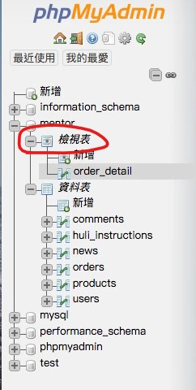

小知識。
View
只是一個用來「看」的表，可以想成是虛擬的 table。
實際用到的機會不多，但可以用在「不想讓別人看到原本 table」時，就只開一個 view 給它。
例如說你有 users、orders 和 products 這些 table，可是你的老闆只想看到像這樣的報表：
而不是一大堆看不懂的 users_id 或 products_id 之類的東西。
所以為了撈出上面的資訊，你大概會下這樣的 SQL：
1 | SELECT o.id, o.user_id. u.username, p.name, o.quantity, o.price, o.quantity * o.price AS total |
接下來你有兩種做法：
- 用 PHP 包成一個 function
- 建立一個 View
建立 view 的方式不難，一樣是用 SQL 語法來建立「檢視表（view）」：
1 | CREATE VIEW order_detail AS |
接著就會看到有個叫做「檢視表」的欄位出現了：

它不是真的 table，它只是把剛剛下的 SQL 指令結果撈出來而已。
另外，既然都說是檢視表，就代表它真的只能「檢視」，不要再想說要對它做新增、編輯或刪除的操作了。
Stored Procedure（SP）
就像 SQL 的 function
這邊談的 function 不是這種：
1 | SELECT SUM(price) FROM order_detail |
這是在 query 裡面用的 function。
我們要談的是可以直接「取代 SQL」的 function。
雖然你可能會想說幹嘛不直接 PHP 來寫一個 function 來用，像這樣：
1 | function getUserOrder($id) { |
這樣子做當然也沒問題，可是如果能直接讓 SQL 本身就有這樣的 function，那不是更方便嗎？這個就是 SP 的目的。
至於用法的話是這樣子：
1 | DELIMITER // # 重新設定 |
注意幾點：
- 為了避免分號的衝突，要先用
DELIMITER指定要用什麼來取代分號。 - 宣告參數時要連同型態一起宣告
另外，一個 SP 都是以一個 data base 來當作單位，所以只有在你建立的地方才能使用。
如果要查看建立的 SP 有哪些的話，可以點「預存程序」來看：
不過 SP 是有缺點的，假如當 PHP 有 Bug 時，就得到 MySQL 看那個 function 是不是有錯，等於要兩邊來回跑的概念。
Triggers
跟 git hooks 提到的概念一樣：
在事情發生前/後要做什麼？
例如說我希望當 products 有更新時，就寫一個記錄到 products_audit 裡。
如果不透過 Trigger 的話，就得在 PHP 裡自己做這件事。所以善用 Trigger 就可以幫你減少一些麻煩。
所以接下來就講一下怎麼設定 Trigger：
1 | DELIMITER // |
附註：MySQL 會提供 OLD 和 NEW 這兩個變數來取得「資料更新前/後的值」
建立成功後，試著去改 products 後再來看 products_audit 就會發現自動更新內容了：
跟 SP 一樣，如果你要看建立了哪些 Trigger 就點「觸發器」來看：